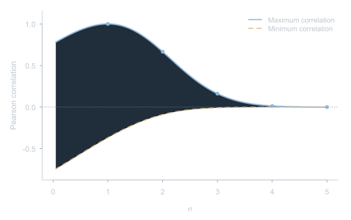
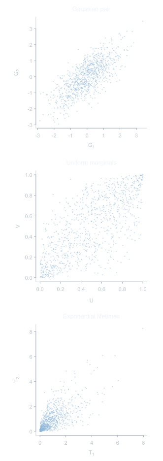
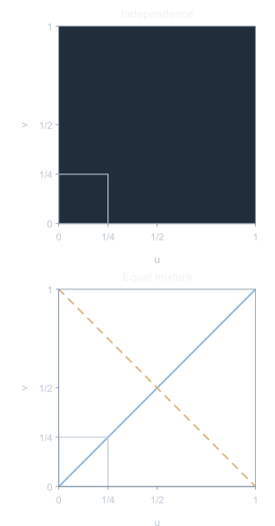

Multivariate risks, correlation and copulas
Chapter 6
The preceding chapter described portfolios whose policy losses were independent. A single storm can damage many insured buildings. Even if we know the loss distribution for each building, the distribution of the total still depends on which buildings suffer losses together. We need their joint distribution.
The familiar Gaussian model suggests that we can fix two marginal distributions and then choose any correlation between \(-1\) and \(1\). How much of that freedom survives when the losses follow other distributions? And if we change the marginals, how can we describe the part of their dependence that stays the same?
6.1 Covariance, correlation and the Gaussian example
6.1.1 What covariance records
For square-integrable real random variables \(X,Y\), define
\[ \operatorname{Cov}(X,Y) =\mathbb E[(X-\mathbb E[X])(Y-\mathbb E[Y])] =\mathbb E[XY]-\mathbb E[X]\mathbb E[Y]. \]
When both variances are positive, their Pearson correlation is
\[ \rho_P(X,Y)=\operatorname{Corr}(X,Y) =\frac{\operatorname{Cov}(X,Y)}{\sigma_X\sigma_Y}, \]
with \(\sigma_X=\sqrt{\mathbb V(X)}\) and \(\sigma_Y=\sqrt{\mathbb V(Y)}\). This definition requires finite, positive variances. The Cauchy–Schwarz inequality gives \(-1\leq\rho_P\leq1\). Equality in absolute value holds exactly when \(Y=aX+b\) almost surely for some \(a\ne0\). The sign of \(a\) gives the sign of the correlation.
For a portfolio \(S=X_1+\cdots+X_d\),
\[ \mathbb V(S)=\sum_{i=1}^d\mathbb V(X_i) +2\sum_{i<j}\operatorname{Cov}(X_i,X_j). \]
The covariances thus suffice to compute the portfolio variance. Computing the probability of a large loss generally requires more information. For instance, independence implies zero covariance when second moments exist. Yet if \(Z\sim\mathcal N(0,1)\), then \(\operatorname{Cov}(Z,Z^2)=\mathbb E[Z^3]=0\) even though the second variable is determined by the first.
6.1.2 Why Gaussian vectors are so convenient
A vector \(\mathbf X=(X_1,\ldots,X_d)^\top\) is Gaussian if every linear combination of its coordinates is normally distributed, allowing constant combinations. We write \(\mathbf X\sim\mathcal N(\mu,\Sigma)\), where \(\mu=\mathbb E[\mathbf X]\) is the mean vector and
\[ \Sigma=(\operatorname{Cov}(X_i,X_j))_{1\leq i,j\leq d} \]
is the covariance matrix. Together they determine the Gaussian law. Every covariance matrix is symmetric and positive semidefinite, since
\[ a^\top\Sigma a=\mathbb V(a^\top\mathbf X)\geq0 \qquad(a\in\mathbb R^d). \]
Conversely, every symmetric positive semidefinite matrix \(\Sigma\) can occur. Write \(\Sigma=AA^\top\), using a Cholesky factor when \(\Sigma\) is positive definite or its symmetric square root in general. If \(\mathbf Z\sim\mathcal N(0,I_d)\), then \(\mathbf X=\mu+A\mathbf Z\) has law \(\mathcal N(\mu,\Sigma)\).
In two dimensions, take independent standard normal variables \(Z_1\) and \(Z_2\). For any \(r\in[-1,1]\), set
\[ \begin{aligned} G_1&=Z_1,\\ G_2&=rZ_1+\sqrt{1-r^2}\,Z_2. \end{aligned} \]
This linear transformation gives the Gaussian vector
\[ \begin{pmatrix}G_1\\G_2\end{pmatrix} \sim\mathcal N\!\left( \begin{pmatrix}0\\0\end{pmatrix}, \begin{pmatrix}1&r\\ r&1\end{pmatrix}\right). \]
Shifting and rescaling the two coordinates gives any prescribed non-degenerate Gaussian marginals with any correlation in \([-1,1]\). At the endpoints \(G_2=G_1\) or \(G_2=-G_1\). In higher dimensions, the chosen correlations must together form a positive semidefinite matrix.
For a jointly Gaussian vector, zero covariances between distinct coordinates also imply independence.
6.2 Fixed marginals restrict the possible correlations
Recall the generalised quantile function used in Chapter 4. For a CDF \(F\) and \(0<u<1\), it is
\[ F^{-1}(u)=\inf\{x\in\mathbb R:F(x)\geq u\}. \]
The equivalence \(F^{-1}(u)\leq x\ \Longleftrightarrow\ u\leq F(x)\) explains why \(F^{-1}(U)\) has CDF \(F\) when \(U\) is uniform on \((0,1)\). We can use the same uniform variable to couple two prescribed distributions.
Theorem 6.1 (Sharp bounds for correlation with fixed marginals) Let \(F_X,F_Y\) be CDFs with finite, strictly positive variances, and let \(U\sim\operatorname{Unif}(0,1)\). For every pair \((X,Y)\) with these marginal CDFs,
\[ \boxed{\rho_{\min}\leq\operatorname{Corr}(X,Y)\leq\rho_{\max}}, \]
where
\[ \begin{aligned} \rho_{\min}&=\operatorname{Corr}\bigl(F_X^{-1}(U),F_Y^{-1}(1-U)\bigr),\\ \rho_{\max}&=\operatorname{Corr}\bigl(F_X^{-1}(U),F_Y^{-1}(U)\bigr). \end{aligned} \]
Both bounds are attained. The upper coupling matches equal quantile levels and is called comonotonic. The lower coupling matches opposite quantile levels and is called countermonotonic.
How short can this interval be?
6.2.1 Two lognormal risks
Fix \(\sigma>0\) and prescribe
\[ \begin{gathered} X\sim\operatorname{Lognormal}(0,1),\\ Y\sim\operatorname{Lognormal}(0,\sigma^2). \end{gathered} \]
Here \(\log X\) is standard normal and \(\log Y\) is normal with mean zero and variance \(\sigma^2\). Write \(\Phi\) for the standard normal CDF. For \(x>0\) and \(y>0\),
\[ \begin{aligned} F_X(x)&=\Phi(\log x),\\ F_Y(y)&=\Phi\!\left(\frac{\log y}{\sigma}\right). \end{aligned} \]
Both CDFs vanish at non-positive arguments. Inverting them gives, for \(0<u<1\),
\[ \begin{aligned} F_X^{-1}(u)&=\exp\!\bigl(\Phi^{-1}(u)\bigr),\\ F_Y^{-1}(u)&=\exp\!\bigl(\sigma\Phi^{-1}(u)\bigr). \end{aligned} \]
For the upper bound, put \(Z=\Phi^{-1}(U)\). The two quantiles at \(U\) are therefore \(X=e^Z\) and \(Y=e^{\sigma Z}\). Since \(\mathbb E[e^{aZ}]=e^{a^2/2}\),
\[ \begin{aligned} \mathbb E[X]&=e^{1/2},&\mathbb V(X)&=e(e-1),\\ \mathbb E[Y]&=e^{\sigma^2/2},&\mathbb V(Y)&=e^{\sigma^2}(e^{\sigma^2}-1),\\ \mathbb E[XY]&=e^{(1+\sigma)^2/2}. \end{aligned} \]
Consequently,
\[ \operatorname{Cov}(X,Y)=e^{(1+\sigma^2)/2}(e^\sigma-1), \]
and dividing by the two standard deviations gives
\[ \boxed{\rho_{\max}(\sigma) =\frac{e^\sigma-1}{\sqrt{(e-1)(e^{\sigma^2}-1)}}.} \]
In particular,
\[ \rho_{\max}(\sigma) \sim\frac{1}{\sqrt{e-1}}\exp\!\left(\sigma-\frac{\sigma^2}{2}\right) \longrightarrow0 \qquad(\sigma\to\infty). \]
For the lower bound, \(\Phi^{-1}(1-U)=-Z\) by symmetry. Coupling \(X=e^Z\) with \(Y=e^{-\sigma Z}\) gives
\[ \boxed{\rho_{\min}(\sigma) =\frac{e^{-\sigma}-1}{\sqrt{(e-1)(e^{\sigma^2}-1)}}.} \]
| \(\sigma\) | \(\rho_{\min}(\sigma)\) | \(\rho_{\max}(\sigma)\) |
|---|---|---|
| \(0.5\) | \(-0.563229\) | \(0.928608\) |
| \(1\) | \(-0.367879\) | \(1.000000\) |
| \(2\) | \(-0.090100\) | \(0.665755\) |
| \(3\) | \(-0.008053\) | \(0.161755\) |
| \(4\) | \(-0.000251\) | \(0.013717\) |
| \(5\) | \(-0.000003\) | \(0.000419\) |
At \(\sigma=4\), the largest possible Pearson correlation is about \(0.014\). Yet in the coupling attaining it, \(Y=X^4\). Knowing \(X\) determines \(Y\) exactly. Raising \(X\) to the fourth power gives much greater weight to the largest observations, and the resulting relation is far from linear (Embrechts et al. 2002).
6.2.2 Bounding the joint CDF
Let \(F_{X,Y}(x,y)=\mathbb P(X\leq x,Y\leq y)\). For any events \(A,B\),
\[ \max\{\mathbb P(A)+\mathbb P(B)-1,0\} \leq\mathbb P(A\cap B) \leq\min\{\mathbb P(A),\mathbb P(B)\}. \]
Taking \(A=\{X\leq x\}\) and \(B=\{Y\leq y\}\) gives the Fréchet–Hoeffding bounds
\[ \boxed{ \begin{aligned} \max\{F_X(x)+F_Y(y)-1,0\} &\leq F_{X,Y}(x,y)\\ &\leq\min\{F_X(x),F_Y(y)\}. \end{aligned}} \]
For the upper coupling, the two events become \(U\leq F_X(x)\) and \(U\leq F_Y(y)\). Their intersection has probability \(\min\{F_X(x),F_Y(y)\}\). For the lower coupling, the events become \(U\leq F_X(x)\) and \(U\geq 1-F_Y(y)\). Their intersection has length \(\max\{F_X(x)+F_Y(y)-1,0\}\). Thus each bound is itself the joint CDF of the corresponding coupling, including when the marginals have atoms.
6.2.3 Expressing covariance in terms of CDFs
Proposition 6.1 (Hoeffding’s covariance identity) For \(X,Y\in L^2\),
\[ \boxed{ \begin{aligned} &\operatorname{Cov}(X,Y)\\ &\quad=\int_{\mathbb R^2} \bigl(F_{X,Y}(x,y)-F_X(x)F_Y(y)\bigr)\,\mathrm dx\,\mathrm dy. \end{aligned}} \]
The integral is absolutely convergent, including for distributions with atoms.
Proof. For every real \(x\),
\[ \boxed{x=\int_{\mathbb R} \left(\mathbf 1_{\{t<x\}}-\mathbf 1_{\{t<0\}}\right)\,\mathrm dt.} \]
For \(x>0\) the integrand is one on \([0,x)\) and zero elsewhere. For \(x<0\) it is minus one on \([x,0)\) and zero elsewhere. Subtracting the identities for \(x\) and \(x'\) gives
\[ x-x'=\int_{\mathbb R} \left(\mathbf 1_{\{t<x\}}-\mathbf 1_{\{t<x'\}}\right)\,\mathrm dt. \]
Let \((X',Y')\) be an independent copy of the pair \((X,Y)\). Since the two pairs have the same law, \(\mathbb E[X'Y']=\mathbb E[XY]\). Independence between the pairs gives \(\mathbb E[XY']=\mathbb E[X'Y]=\mathbb E[X]\mathbb E[Y]\). Expanding the product now gives
\[ \mathbb E[(X-X')(Y-Y')] =2\bigl(\mathbb E[XY]-\mathbb E[X]\mathbb E[Y]\bigr) =2\operatorname{Cov}(X,Y). \]
Write \(\Delta_X(t)=\mathbf 1_{\{t<X\}}-\mathbf 1_{\{t<X'\}}\) and define \(\Delta_Y(s)\) in the same way. We may interchange integration and expectation by Fubini’s theorem, since
\[ \mathbb E\!\left[\int_{\mathbb R^2} |\Delta_X(t)\Delta_Y(s)|\,\mathrm dt\,\mathrm ds\right] =\mathbb E\bigl[|X-X'|\,|Y-Y'|\bigr]<\infty \]
by Cauchy–Schwarz. For every \(t,s\in\mathbb R\), expanding the two indicator differences gives
\[ \begin{aligned} \tfrac12\mathbb E[\Delta_X(t)\Delta_Y(s)] &=\mathbb P(X>t,Y>s)-\mathbb P(X>t)\mathbb P(Y>s)\\ &=F_{X,Y}(t,s)-F_X(t)F_Y(s). \end{aligned} \]
The last equality follows by taking complements:
\[ \begin{aligned} \mathbb P(X>t,Y>s) &=1-F_X(t)-F_Y(s)\\ &\quad+F_{X,Y}(t,s). \end{aligned} \]
Integrating gives the covariance identity. The same Fubini estimate bounds the integral of the absolute value.
6.2.4 Completing the proof of the correlation bounds
In the covariance identity, \(F_XF_Y\) is fixed. Replacing the joint CDF by its Fréchet–Hoeffding lower or upper bound therefore bounds the covariance. Both bounds are attained by the two quantile couplings identified above. Dividing by the fixed positive quantity \(\sigma_X\sigma_Y\) proves Theorem 6.1.
Every value between the endpoints is also attainable. Choose the upper coupling with probability \(a\) and the lower coupling otherwise, using a draw independent of \(U\). The marginal distributions stay fixed and the covariance is the weighted average of the two covariances. The resulting correlation is \(a\rho_{\max}+(1-a)\rho_{\min}\).
6.3 From values to ranks
Return to \(Y=X^4\) for the two lognormal risks. If one observation of \(X\) exceeds another, the corresponding observations of \(Y\) come in exactly the same order. How can we record that agreement? When \(F_X\) and \(F_Y\) are continuous, \(F_X(X)\) and \(F_Y(Y)\) give the positions of the observations within their own distributions. Both are uniform on \((0,1)\). Their Pearson correlation is Spearman’s rank correlation,
\[ \rho_S(X,Y)=\operatorname{Corr}(F_X(X),F_Y(Y)). \]
Indeed, if \(g\) is strictly increasing,
\[ \begin{aligned} F_{g(X)}(g(x)) &= \mathbb P(g(X)\leq g(x))\\ &= F_X(x). \end{aligned} \]
Applying such a transformation to either variable preserves its position and hence \(\rho_S\). The comonotonic coupling pairs \(U\) with \(U\), giving \(\rho_S=1\). The countermonotonic coupling pairs \(U\) with \(1-U\), giving \(\rho_S=-1\). In particular, \(e^Z\) and \(e^{\sigma Z}\) have Spearman correlation one for every \(\sigma>0\).
6.3.1 Five observations are enough to see the difference
For a sample of \(n\geq2\) pairs \((x_i,y_i)\), empirical Spearman correlation is the Pearson correlation of the two rank vectors. Consider these five pairs.
| Observation \(i\) | \(x_i\) | \(y_i\) | Rank of \(x_i\) | Rank of \(y_i\) |
|---|---|---|---|---|
| 1 | 0 | 0 | 1 | 1 |
| 2 | 1 | 97 | 2 | 2 |
| 3 | 2 | 98 | 3 | 3 |
| 4 | 3 | 99 | 4 | 4 |
| 5 | 100 | 100 | 5 | 5 |
The ranks are identical, so \(\widehat\rho_S=1\). However, \(\bar x=21.2\), \(\bar y=78.8\), and
\[ \widehat\rho_P =\frac{\sum_i(x_i-\bar x)(y_i-\bar y)} {\sqrt{\sum_i(x_i-\bar x)^2\sum_i(y_i-\bar y)^2}} =\frac{2237.2}{7766.8}\simeq0.2880. \]
The largest jump in \(x\) comes at the last observation. The largest jump in \(y\) comes at the second. This difference in spacing affects Pearson correlation even though the two orders agree perfectly.
For data without ties, the equivalent formula is
\[ \widehat\rho_S=1-\frac{6\sum_{i=1}^n(R_i-S_i)^2}{n(n^2-1)}, \]
where \(R_i\) and \(S_i\) are the ranks of \(x_i\) and \(y_i\). With ties, assign the tied observations their average rank and compute the correlation of the resulting ranks.
Spearman correlation summarises the agreement between two sets of ranks in one number. What could we model if we kept the whole joint distribution of those positions?
6.4 Simulating two dependent exponential variables
Suppose \(T_1\) and \(T_2\) are the times until two machines fail. Their lifetimes have exponential distributions with rates \(\eta_1,\eta_2>0\), so \(\mathbb P(T_j>t)=e^{-\eta_jt}\) for \(t\geq0\). The machines operate in the same environment. How can we simulate lifetimes that reflect this shared exposure while keeping both exponential distributions?
If \(U\) and \(V\) are each uniform on \((0,1)\), then
\[ -\frac{\log U}{\eta_1}\qquad\text{and}\qquad -\frac{\log V}{\eta_2} \]
have the required marginal distributions. Independence of \(U\) and \(V\) gives independent lifetimes. To introduce dependence, we are free to choose a different joint law for the pair of uniforms.
For the construction below we use the increasing exponential quantiles
\[ Q_j(u)=-\frac{\log(1-u)}{\eta_j},\qquad 0<u<1. \]
Since \(1-U\) is also uniform, \(Q_1(U)\) has the first exponential distribution, and similarly for \(Q_2(V)\). Using increasing quantiles ensures that a large value of a uniform variable corresponds to a long lifetime.
6.4.1 From a Gaussian pair to two exponential variables
Start with \((Z_1,Z_2)^\top\sim\mathcal N(0,I_2)\). Any standard normal generator will do, for instance the Box–Muller method (Box and Muller 1958). Choose \(r\in[-1,1]\). The first arrow in Figure 6.2 uses our Gaussian construction to introduce correlation \(r\). The next two arrows change the marginals by increasing transformations.
Independent standard normals
\((Z_1,Z_2)^\top\sim\mathcal N(0,I_2)\)
Gaussian pair with correlation \(r\)
\(G_1=Z_1\) and \(G_2=rZ_1+\sqrt{1-r^2}\,Z_2\)
Uniform marginals
\(U=\Phi(G_1)\) and \(V=\Phi(G_2)\)
Exponential marginals
\(T_1=Q_1(U)\) and \(T_2=Q_2(V)\)
Each \(G_j\) is standard normal, so \(\Phi(G_j)\) is uniform. Applying the two exponential quantiles now gives the desired lifetimes. The parameter \(r\) is the Pearson correlation of the Gaussian pair. The nonlinear change to exponential marginals generally changes that correlation.

The construction works much more generally. Start from any pair \((X_0,Y_0)\) with continuous marginal CDFs \(H_1\) and \(H_2\). The pair \((U,V)=(H_1(X_0),H_2(Y_0))\) has uniform marginals. Its joint distribution records how the two positions within the original marginals vary together. Strictly increasing transformations of \(X_0\) or \(Y_0\) preserve those positions.
Conversely, suppose we keep this pair \((U,V)\) and choose two new marginal CDFs \(F_X\) and \(F_Y\). Set \(X=F_X^{-1}(U)\) and \(Y=F_Y^{-1}(V)\). The quantile identity gives, for every \(x,y\),
\[ \{X\leq x,\ Y\leq y\} =\{U\leq F_X(x),\ V\leq F_Y(y)\}. \]
Thus the joint law on the unit square is the one ingredient we can reuse when we change the marginals. This construction also works when a new marginal has atoms.
6.5 Copulas and the choice of marginals
6.5.1 Definition and Sklar’s theorem
Definition 6.1 (Bivariate copula) A bivariate copula is the joint CDF of a pair \((U,V)\) whose two marginal distributions are uniform on \((0,1)\). It is the function
\[ C(u,v)=\mathbb P(U\leq u,V\leq v),\qquad (u,v)\in[0,1]^2. \]
For continuous marginal CDFs \(F_X\) and \(F_Y\), the copula of \((X,Y)\) is the joint CDF of \((F_X(X),F_Y(Y))\). Applying the corresponding quantiles recovers \(X\) and \(Y\) almost surely. The following theorem gives the precise relation for arbitrary marginals (Sklar 1959; Nelsen 2006).
Theorem 6.2 (Sklar’s theorem) Let \(F_{X,Y}\) be a bivariate CDF with marginal CDFs \(F_X\) and \(F_Y\). There exists a copula \(C\) such that, for all \(x,y\in\mathbb R\),
\[ \boxed{F_{X,Y}(x,y)=C\bigl(F_X(x),F_Y(y)\bigr).} \]
If the marginals are continuous, \(C\) is unique on the whole unit square. In general, its values are uniquely determined on \(F_X(\mathbb R)\times F_Y(\mathbb R)\), the set of pairs of values actually taken by the two CDFs. When a marginal has jumps, different copulas can give the same joint distribution.
Conversely, any copula \(C\) and any marginal CDFs \(F_X,F_Y\) define a joint CDF with those marginals by the displayed formula.
The converse follows directly from the quantile construction above. For a marginal with atoms, the uniform representation from Chapter 4 spreads its mass across each jump of its CDF. Applying that construction to each coordinate gives the pair of uniforms needed for existence.
6.5.2 Which functions are copulas?
Proposition 6.2 (Boundary conditions and rectangle probabilities) A function \(C:[0,1]^2\to[0,1]\) is a copula if and only if all three conditions below hold.
\(C(u,0)=C(0,v)=0\) for every \(u,v\in[0,1]\).
\(C(u,1)=u\) and \(C(1,v)=v\) for every \(u,v\in[0,1]\).
For every \(0\leq u_1\leq u_2\leq1\) and \(0\leq v_1\leq v_2\leq1\), the rectangle \((u_1,u_2]\times(v_1,v_2]\) has non-negative mass,
\[ \boxed{ \begin{aligned} &C(u_2,v_2)-C(u_1,v_2)\\ &\quad-C(u_2,v_1)+C(u_1,v_1)\geq0. \end{aligned}} \]
For a pair of uniforms, the first two conditions follow from its marginals. The four-term difference is the probability of the rectangle by inclusion–exclusion.
Conversely, suppose the three conditions hold. For \(u_1\leq u_2\), apply the rectangle condition first to \((u_1,u_2]\times(0,v]\) and then to \((u_1,u_2]\times(v,1]\). The two masses are non-negative and their sum is the mass \(u_2-u_1\) of the whole vertical strip. Hence
\[ 0\leq C(u_2,v)-C(u_1,v)\leq u_2-u_1. \]
Interchanging the two coordinates gives the corresponding bound for a horizontal strip. Change one coordinate at a time, passing from \((u,v)\) through \((u',v)\) to \((u',v')\). The triangle inequality gives
\[ |C(u,v)-C(u',v')|\leq |u-u'|+|v-v'|. \]
In particular, \(C\) is continuous. The rectangle masses therefore define a probability measure on the square, with total mass \(C(1,1)=1\) and the uniform marginals specified by condition 2.
6.5.3 Bounds and examples
Applying the Fréchet–Hoeffding bounds to uniform marginals gives
\[ \boxed{W(u,v)\leq C(u,v)\leq M(u,v),} \] where \[ \begin{aligned} W(u,v)&:=\max\{u+v-1,0\},\\ M(u,v)&:=\min\{u,v\}. \end{aligned} \]
Both bounds are attained. The pair \((U,U)\) has copula \(M\) and puts all its mass on the diagonal. The pair \((U,1-U)\) has copula \(W\) and puts all its mass on the opposite diagonal.1
We have already constructed the Gaussian copula,
\[ C_r^{\mathrm G}(u,v)=\Phi_r(\Phi^{-1}(u),\Phi^{-1}(v)), \qquad -1<r<1, \]
where \(\Phi_r\) is the standard bivariate normal CDF with correlation \(r\). The extensions at \(r=1\) and \(r=-1\) are \(M\) and \(W\). At \(r=0\) the Gaussian coordinates are independent, so the copula is \(\Pi(u,v)=uv\).
The following examples are given on \((0,1)^2\) and extended to the boundary by continuity.
| Copula | Formula | Parameters |
|---|---|---|
| Independence | \(\Pi(u,v)=uv\) | None |
| Clayton | \(C_\theta(u,v)=(u^{-\theta}+v^{-\theta}-1)^{-1/\theta}\) | \(\theta>0\) |
| Gumbel | \(C_\theta(u,v)=\exp\{-(({-\log u})^\theta+({-\log v})^\theta)^{1/\theta}\}\) | \(\theta\geq1\) |
| Student | \(C_{\nu,r}^{\mathrm t}(u,v)=t_{\nu,r}(t_\nu^{-1}(u),t_\nu^{-1}(v))\) | \(\nu>0\), \(-1<r<1\) |
Here \(t_\nu\) is the univariate Student CDF and \(t_{\nu,r}\) is the bivariate Student CDF with \(\nu\) degrees of freedom and scatter matrix \(\left(\begin{smallmatrix}1&r\\r&1\end{smallmatrix}\right)\). To construct a pair with the latter CDF, set
\[ (D_1,D_2)=\frac{(G_1,G_2)}{\sqrt{Q/\nu}}, \qquad Q\sim\chi^2_\nu, \]
where \(Q\) is independent of the Gaussian pair. Then \((t_\nu(D_1),t_\nu(D_2))\) has the Student copula. A small common denominator can make both Student variables extreme at once. Even at \(r=0\) they are dependent for finite \(\nu\). For \(\nu>2\), their second moments exist and \(\operatorname{Corr}(D_1,D_2)=r\).
Clayton tends to independence as \(\theta\downarrow0\), and Gumbel gives independence at \(\theta=1\). Both tend to \(M\) as \(\theta\to\infty\). Their behaviour near the corners of the square will distinguish them. For further reading on these families see Nelsen (2006), and on the Student construction see Demarta and McNeil (2005).
6.6 Pearson and Spearman correlations through a copula
6.6.1 Pearson correlation also depends on the marginals
Let \(C\) be a copula in Sklar’s representation and assume finite positive marginal variances. Substituting into the covariance identity yields
\[ \boxed{ \begin{aligned} &\rho_P(X,Y)\\ &\quad=\frac1{\sigma_X\sigma_Y}\int_{\mathbb R^2} \bigl[C(F_X(x),F_Y(y))\\ &\qquad\qquad-F_X(x)F_Y(y)\bigr] \,\mathrm dx\,\mathrm dy. \end{aligned}} \]
The marginal CDFs appear inside the integral. The lognormal example shows the consequence. The pair \((e^Z,e^{\sigma Z})\) has the same copula \(M\) for every \(\sigma>0\). Its Pearson correlation equals one at \(\sigma=1\) and tends to zero as \(\sigma\) grows.
6.6.2 Spearman correlation depends only on the copula
For continuous marginals, let \(U=F_X(X)\) and \(V=F_Y(Y)\). Their means are \(1/2\) and variances \(1/12\). Hence
\[ \rho_S=12\mathbb E[UV]-3. \]
Applying the covariance identity to the uniform variables gives
\[ \boxed{ \begin{aligned} \rho_S &=12\int_0^1\int_0^1\bigl(C(u,v)-uv\bigr)\,\mathrm du\,\mathrm dv\\ &=12\int_0^1\int_0^1C(u,v)\,\mathrm du\,\mathrm dv-3. \end{aligned}} \]
This formula integrates \(C\) over ordinary area on the unit square. A measure intended to describe dependence alone should be invariant under strictly increasing changes of marginals. For continuous marginals, Spearman correlation has this property because it depends only on \(C\).
6.6.3 A dependent pair with zero Spearman correlation
For \(\Pi\), \(M\) and \(W\), the integrals of \(C\) over the square are respectively \(1/4\), \(1/3\) and \(1/6\). Their Spearman correlations are therefore \(0\), \(1\) and \(-1\). Now take \(U\) uniform and toss an independent fair coin. Set \(V=U\) on heads and \(V=1-U\) on tails. The resulting copula is
\[ C_*(u,v)=\tfrac12 M(u,v)+\tfrac12 W(u,v). \]
The two contributions to Spearman correlation cancel, giving \(\rho_S=0\), exactly as under independence. Yet \(V\) can only equal \(U\) or \(1-U\). Look at the small square in Figure 6.4. Under independence its probability is \((1/4)^2=1/16\). Under \(C_*\) only the branch \(V=U\) enters that square, so its probability is \(\tfrac12\times\tfrac14=1/8\).

6.7 Dependence in the tails
With continuous marginals, put \(U=F_X(X)\) and \(V=F_Y(Y)\). Simultaneous unusually large losses correspond to the upper-right corner of the unit square. For two lifetimes, simultaneous early failures correspond to the lower-left corner.
If the limits exist, define the lower and upper tail-dependence coefficients by
\[ \begin{aligned} \chi_L&=\lim_{q\downarrow0}\mathbb P(V\leq q\mid U\leq q) =\lim_{q\downarrow0}\frac{C(q,q)}q,\\ \chi_U&=\lim_{q\uparrow1}\mathbb P(V>q\mid U>q) =\lim_{q\uparrow1}\frac{1-2q+C(q,q)}{1-q}. \end{aligned} \]
Both coefficients lie in \([0,1]\). For example, at \(q=0.99\) the upper conditional probability asks how often the second loss exceeds its own 99th percentile among outcomes in which the first loss exceeds its 99th percentile. The limit follows that probability as the threshold becomes more extreme.
| Copula | \(\chi_L\) | \(\chi_U\) |
|---|---|---|
| Independence \(\Pi\) | \(0\) | \(0\) |
| Comonotonicity \(M\) | \(1\) | \(1\) |
| Countermonotonicity \(W\) | \(0\) | \(0\) |
| Gaussian, \(-1<r<1\) | \(0\) | \(0\) |
| Clayton, \(\theta>0\) | \(2^{-1/\theta}\) | \(0\) |
| Gumbel, \(\theta\geq1\) | \(0\) | \(2-2^{1/\theta}\) |
| Student, finite \(\nu>0\), \(-1<r<1\) | \(h_{\nu,r}\) | \(h_{\nu,r}\) |
In the last line,
\[ h_{\nu,r}=2t_{\nu+1}\!\left(-\sqrt{\frac{(\nu+1)(1-r)}{1+r}}\right)>0. \]
For Clayton, \(C_\theta(q,q)/q=(2-q^\theta)^{-1/\theta}\) gives the lower coefficient directly. For Gumbel, \(C_\theta(q,q)=q^{2^{1/\theta}}\), and expansion at \(q=1\) gives its upper coefficient. The Student expression follows from its conditional distribution (Demarta and McNeil 2005).
To understand the Gaussian result, write \(q=\Phi(z)\) with \(z\to\infty\). If both \(G_1>z\) and \(G_2>z\), then \(G_1+G_2>2z\). Since \(G_1+G_2\sim\mathcal N(0,2(1+r))\),
\[ \frac{\mathbb P(G_1>z,G_2>z)}{\mathbb P(G_1>z)} \leq\frac{1-\Phi(z\sqrt{2/(1+r)})}{1-\Phi(z)}\longrightarrow0 \quad(-1<r<1). \]
The last limit follows from \(1-\Phi(z)\sim e^{-z^2/2}/(z\sqrt{2\pi})\). Symmetry gives the lower-tail result. At a fixed threshold the conditional probability can still be substantial. For example, with \(r=0.75\) the Gaussian conditional exceedance probability at the 99th percentiles is about \(0.317\), even though its limit is zero.
For example, a Student copula with \(\nu=4\) and \(r=0.75\) has \(\chi_U=\chi_L\simeq0.4366\), whereas the Gaussian copula with the same \(r\) has both coefficients zero. For that Student model, an increasingly extreme upper observation in one margin retains a positive limiting chance of being accompanied by an equally high quantile exceedance in the other.
For the machines, the event of concern may be two unusually early failures. The Clayton family allows such clustering in the lower tail. For the buildings exposed to the same storm, the concern is two unusually large losses. The Gumbel family allows such clustering in the upper tail when \(\theta>1\). Which corner of the square matters is a question about the risks themselves.
Key takeaways
References
Box, George E. P., and Mervin E. Muller. 1958. ‘A Note on the Generation of Random Normal Deviates’. The Annals of Mathematical Statistics 29 (2): 610–11. https://doi.org/10.1214/aoms/1177706645.
Demarta, Stefano, and Alexander J. McNeil. 2005. ‘The t Copula and Related Copulas’. International Statistical Review 73 (1): 111–29. https://doi.org/10.1111/j.1751-5823.2005.tb00254.x.
Embrechts, Paul, Alexander J. McNeil, and Daniel Straumann. 2002. ‘Correlation and Dependence in Risk Management: Properties and Pitfalls’. In Risk Management: Value at Risk and Beyond, edited by M. A. H. Dempster. Cambridge University Press. https://doi.org/10.1017/CBO9780511615337.008.
Nelsen, Roger B. 2006. An Introduction to Copulas. 2nd edn. Springer. https://doi.org/10.1007/0-387-28678-0.
Sklar, Abe. 1959. ‘Fonctions de répartition à n dimensions et leurs marges’. Publications de l’Institut de Statistique de l’Université de Paris 8: 229–31.
Footnotes
Copulas can describe any number \(d\) of variables. In dimensions \(d\geq3\), the analogous lower bound \(\max\{\sum_{j=1}^d u_j-d+1,0\}\) still bounds every copula from below, but fails the conditions for a \(d\)-dimensional CDF.↩︎